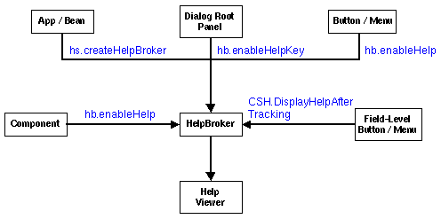

HelpBroker object to implement context-sensitive
help, these low-level elements are managed for you.
The JavaHelp system provides classes and methods that help you implement context-sensitive help in your applications. The following sections:
The following table summarizes the context-sensitive help system.
| CSH Type | Activation Mechanism | Object for Which Help Is Provided | Implementation Steps |
|---|---|---|---|
| Window-Level | Press F1 (or Help) key. | Window with focus |
|
| Field-Level |
|
Selected object |
|
| Help Button
Menu Item |
Click button or choose menu item. | Topic associated with button or menu item |
|
| System Initiated | Internal, varies. | Internal, varies |
|
This section describes the low-level elements used in implementing context-sensitive help.
If you use the "convenience" methods in the HelpBroker object to implement context-sensitive
help, these low-level elements are managed for you.
|
The basic steps for implementing context-sensitive help are:
Component help properties
for GUI objects
To provide context-sensitive help for GUI Components and menu items, you must
associate a help ID with that Component or menu item. To make that
association, you set the helpID property and (if you use multiple helpsets)
the HelpSet for the Component or MenuItem The JavaHelp
system CSH class provides the following convenient methods for setting
and getting the helpID for Components and MenuItems:
public static void setHelpIDString(Component comp, String helpID);
Sets the helpID for a component.
public static String getHelpIDString(Component comp);
Returns the helpID for a component.
public static void setHelpSet(Component comp, HelpSet hs);
Sets the HelpSet for a component.
public static HelpSet getHelpSet(Component comp);
Returns the HelpSet of a component.
public static void setHelpIDString(MenuItem comp,
String helpID);
Sets the helpID for a menu item.
public static String getHelpIDString(MenuItem comp);
Returns the helpID for a menu item.
public static void setHelpSet(MenuItem comp, HelpSet hs);
Sets the helpset for a menu item.
public static HelpSet getHelpSet(MenuItem comp);
Returns the helpset of a menu item.
The context-sensitive help class provides the CSH.trackCSEvents
method, which you can use to easily track context-sensitive events. This method
traps all non-navigational events until an object is selected. It returns the
selected object. Following is the declaration for the method:
public static Component CSH.trackCSEvents()
The sections that follow describe how to use the JavaHelp system to implement
various forms of context-sensitive help.
The JavaHelp system defines a HelpBroker interface that provides
convenience methods that greatly simplify the job of implementing context-sensitive
help. HelpBroker methods hide much of the underlying implementation
details. In exchange, using the HelpBroker limits the flexibility of
your implementation. For example, if you use the DefaultHelpBroker,
you must display help information in the standard help viewer.
You can implement context-sensitive help without using the
HelpBroker, or you can use the HelpBroker for some tasks
and not for others. For example, if your implementation requires something
not provided in the HelpBroker, such as displaying context-sensitive
help in a different viewer, you must use the basic classes (CSH,
JHelp) directly. For information about those classes, use the JavaHelp
system apiviewer command.
|
| With some of these methods, you can specify the presentation type, the type of window in which the help topics is displayed. The examples show generic names for popup windows and secondary windows that will always work. However, it is possible that specific presentation definitions have been provided in the helpset file by the help author. Since the help author can define attributes of presentations, including their size, their position, and the number and type of panes, if presentations are defined in the helpset file, you might want to use their names in help calls. |
A HelpBroker's convenience methods enable:
hb.*) are used with
other JavaHelp system components:

A HelpBroker provides the following context-sensitive methods:
public void setHelpSet(HelpSet hs);
Sets the HelpSet for the current HelpBroker (there can be
only one HelpSet per HelpBroker). If you use this method to
change helpsets, the displays in the corresponding JHelp component
and JHelpNavigator are changed.
public HelpSet getHelpSet();
Gets the current HelpSet for the HelpBroker.
public void setCurrentID(Map.ID id) throws BadIDException;
Sets the current ID that is to be displayed in the help viewer. If hs
is null, the HelpBroker's current HelpSet is used. If hs
is different from the current HelpSet (and not contained in the current
HelpSet), the setHelpSet method is executed.
public void setCurrentURL(URL url, HelpSet hs) throws BadIDException;
Displays the specified URL in the help viewer. If hs is null, the
HelpBroker's current HelpSet is used. If hs is different
from the current HelpSet (and not contained in the current HelpSet),
the setHelpSet method is executed.
public void enableHelpKey(Component comp, String id, HelpSet hs,
String presentationType, String presentationName);
Enables the Help key on a Component (the F1 key on Windows machines). This
method works best when the component is the rootPane of a JFrame
in Swing-based applications, or a java.awt.Window (or subclass
thereof) in AWT-based applications. This method sets the default helpID
and HelpSet for the Component and registers keyboard
actions to trap the "Help" keypress. If the object with the current focus has
a helpID, the helpID is displayed when the Help key
is pressed; otherwise, the default helpID is displayed. You can
optionally specify the type of help window in which a help topic is displayed.
For example, the following code specifies that the help presentation is a secondary
window named mainSW:
JTextArea newText = new JTextArea();
hb.enableHelp(newText, "debug.overview", hs);
. . .
rootpane = frame.getRootPane();
mainHelpBroker.enableHelpKey(rootpane,
"top",
null,
"javax.help.SecondaryWindow",
"mainSW");
public void enableHelp(Component comp, String id, HelpSet hs);
Enables help activation for a help component (for example, a Help button). This method:
helpID and HelpSet on comp
HelpBroker's HelpActionListener on comp
public void enableHelp(MenuItem comp, String id, HelpSet hs)
Enables help activation for a MenuItem. This method:
helpID and HelpSet on comp
HelpBroker's HelpActionListener on comp
public void enableHelpOnButton(
Component comp, String id, HelpSet hs,
String presentationType,
String presentationName);
Enables help for a Component. This method sets the helpID
and HelpSet for the Component and adds an actionListener.
When an action is performed it displays the Component's helpID
and HelpSet in the default viewer. If the Component is not
a javax.swing.AbstractButton or a java.awt.Button, an IllegalArgumentException
is thrown. You can optionally specify the type of help window in which a help
topic is displayed.
For example, the following code specifies that the help presentation is a secondary
window named mainSW:
JButton helpButton = new JButton("Help",
"javax.help.SecondaryWindow",
"mainSW");
mainHelpBroker.enableHelpOnButton(helpButton,
"browse.strings",
null,
"javax.help.SecondaryWindow",
"mainSW");
public void enableHelpOnButton(MenuItem comp, String id, HelpSet hs,
String presentationType,
String presentationName);
Enables help for a MenuItem. This method sets the helpID
and HelpSet for the Component and adds an actionListener.
When an action is performed it displays the helpID and HelpSet
in the default viewer. You can optionally specify the type of help window in
which a help topic is displayed.
CSH Inner ClassesThe CSH class contains three inner classes that provide support for
context-sensitive help.
CSH.DisplayHelpAfterTracking CSH.DisplayHelpAfterTracking(HelpSet hs,
String presentationType,
String presentationName)
This class defines an ActionListener that displays help for a selected
object after tracking context-sensitive events. Its constructor takes a HelpBroker
object. You can optionally specify the type of help window in which the help
topic is displayed. For example, you could display help for a toolbar button
in a popup window as follows:
JToolBar toolbar=new JToolBar();
. . .
helpbutton= addButton(toolbar, "images/help.gif", "help");
helpbutton.addActionListener(
new CSH.DisplayHelpAfterTracking (mainHS,
"javax.help.Popup",
null));
CSH.DisplayHelpFromFocus CSH.DisplayHelpFromFocus(HelpSet hs,
String presentationType,
String presentationName)
An ActionListener that displays the help of the object that currently
has focus. This method is used to enable a HelpKey action listening
for components other than the RootPane or window. This listener determines
if the object with the current focus has a helpID, and if it does the
helpID is displayed. If the object does not have a helpID, the helpID
on the action's source is displayed (if one exists). You can optionally specify
the type of help window in which the help topic is displayed.
CSH.DisplayHelpFromSource CSH.DisplayHelpFromSource(HelpSet hs,
String presentationType,
String presentationName)
An actionListener that gets the helpID for the action source and displays
the helpID in the help viewer. Its constructor takes a HelpBroker object. You
can optionally specify the type of help window in which the help topic is displayed.
Start your window-level help
implementation by setting the helpID and (if you use multiple helpsets) the
HelpSet for each component for which you want help. If you do not
set help for a given component, CSH.getHelpID() recursively searches
through the component's ancestors until it finds the first ancestor with a helpID,
or until it reaches the last ancestor. For example:
: JTextArea newText = new JTextArea(); hb.enableHelp(newText, "debug.overview", hs); :
After you set the helpID and helpset for all components,
use the HelpBroker enableHelpKey() method to enable the F1 key
for the frame's RootPane. The hb.getHelpKeyActionListener() method
enables the F1 key on ActionListener objects other than root panes.
For example, the following code displays the help in the default viewer:
:
rootpane = frame.getRootPane();
mainHelpBroker.enableHelpKey(rootpane, "top", null);
:
If you want to display help in a popup window, substitute the following line of code: mainHelpBroker.enableHelpKey(rootpane, "top", null,
"javax.help.Popup", null);
If you want to display help in a secondary window named mainHelpBroker.enableHelpKey(rootpane, "top", null,
"javax.help.SecondaryWindow",
"mainSW");
|
Start your field-level help implementation by setting the
helpID and (if you use multiple helpsets) helpset for each component for which
you want help. If you do not set help for a given component,
CSH.getHelpID() recursively searches through the
component's ancestors until it finds the first ancestor
with a helpID, or until it reaches the last ancestor.
After you set the helpID and helpset for all components, create
a field-level help button or menu item. Set an
ActionListener on the button or menu item with a HelpBroker
object using getOnItemActionActionListener. For example:
JToolBar toolbar=new JToolBar();
CSH.setHelpID(toolbar,"toolbar.main");
:
helpbutton= addButton(toolbar, "images/help.gif", "help");
helpbutton.addActionListener(
new CSH.DisplayHelpAfterTracking(mainHelpBroker));
The following invocation would display the field-level help in a popup window:
JToolBar toolbar=new JToolBar();
CSH.setHelpID(toolbar,"toolbar.main");
:
helpbutton= addButton(toolbar, "images/help.gif", "help");
helpbutton.addActionListener(
new CSH.DisplayHelpAfterTracking(mainHelpBroker,
"javax.help.Popup",
null));
The following invocation would display the field-level help in a secondary window:
JToolBar toolbar=new JToolBar();
CSH.setHelpID(toolbar,"toolbar.main");
:
helpbutton= addButton(toolbar, "images/help.gif", "help");
helpbutton.addActionListener(
new CSH.DisplayHelpAfterTracking(mainHelpBroker,
"javax.help.SecondaryWindow",
"mainSW"));
To implement Help menu or Help button help:
helpID and (if you use multiple helpsets) the helpset on
the object.
HelpBroker.
CSH class provides the CSH.DisplayHelpFromSource class to
enable help on objects with types other than AbstractButton, Button,
or MenuItem. For example:
JButton helpButton = new JButton("Help");
mainHelpBroker.enableHelpOnButton(helpButton, "browse.strings", null);
HelpBroker.enableHelpOnButton uses CSH.DisplayHelpFromSource
and also sets the appropriate ID on the Button and the ActionListener
on the Button. If this example used CSH.DisplayHelpFromSource
instead, it would have to set the ID and ActionListener explicitly. Using
HelpBroker in this example simplifies the code.
|
All the other help activations discussed in this section result from the user's clicking a button, pressing a key, or selecting an item in the navigator or content viewer. With system initiated help, the action is not initiated by the user, but rather by the application, which recognizes that the user is need of help and automatically calls the help system. For example, the user might have repeatedly tried an operation that failed every time or canceled a task midway through an operation.
Although system initiated help is rarely implemented with the help viewer, it is simple to do so. When help is presented internally within an application, pass a valid helpID to a HelpBroker object. For example:
:
try {
mainHelpBroker.setCurrentID(helpID);
} catch (Exception ee) {
System.err.println("trouble with visiting id; "+ee);
}
:
If you wanted the help to display in a popup window, you could use the following code instead:
:
try {
Popup popup = (Popup)Popup.getPresentation(mainHS,null);
popup.setInvoker (component);
popup.setCurrentID (helpID);
popup.setDisplayed(true);
} catch (Exception ee) {
System.err.println("trouble with visiting id; "+ee);
}
:
If you wanted the help to display in a secondary window, you could use the following code:
:
try {
mainHelpBroker.showID(helpID,
"javax.help.SecondaryWindow",
"main");
} catch (Exception ee) {
System.err.println("trouble with visiting id; "+ee); }
}
:
The following example shows the code required for the different types of context-sensitive help using a default helpset:
:
try {
ClassLoader cl = ApiDemo.class.getClassLoader();
URL url = HelpSet.findHelpSet(cl, helpsetName);
mainHS = new HelpSet(cl, url);
} catch (Exception ee) {
System.out.println ("Help Set "+helpsetName+" not found");
return;
} catch (ExceptionInInitializerError ex) {
System.err.println("initialization error:");
ex.getException().printStackTrace();
}
mainHB = mainHS.createHelpBroker();
:
// Enable window-level help on RootPane
rootpane = frame.getRootPane();
mainHB.enableHelpKey(rootpane, "top", null);
:
// Enable field-level help on various components
JToolBar toolbar=new JToolBar();
CSH.setHelpIDString(toolbar,"toolbar.main");
:
//Enable Menu/Button help on Help menu item
helpbutton= addButton(toolbar, "images/help.gif", "help");
mainHelpBroker.enableHelpButton(helpbutton, "browser.strings", null);
sourceIFrame = new JInternalFrame("Source", true, true, true, true);
CSH.setHelpIDString(sourceIFrame, "edit.editsource");
JTextArea newtext=new JTextArea();
CSH.setHelpIDString(newtext, "build.build");
newtext = new JTextArea();
CSH.setHelpIDString(newtext, "debug.overview");
newtext = new JTextArea();
CSH.setHelpIDString(newtext, "browse.strings");
:
// System Level help somewhere within the code
try {
mainHelpBroker.setCurrentID(helpID);
} catch (Exception ee) {
System.err.println("trouble with visiting id; "+ee);
}
:
For certain objects, such as a JTable, having a single map ID per
object is not sufficient. A technique is needed to determine programmatically
the map ID based on cursor position, selection, or some other mechanism inherent
to the object. For example a Canvas object might determine the map
ID based on the object currently selected on the canvas or, alternatively, from
the mouse cursor position.
The following APIs in the CSH class support dynamic ID assignment:
| Name | Description |
|---|---|
addManager(CSH.Manager) |
Registers the specified manager to handle dynamic context-sensitive help. |
addManager(index,CSH.Manager) |
Registers the specified manager to handle dynamic context-sensitive help at the specified position in the list of managers. |
getManager(index) |
Returns the manager at the specified position in list of managers. |
getManagerCount() |
Returns the number of managers registered. |
getManagers() |
Returns array of managers registered. |
removeAllManagers() |
Remove all the dynamic context-sensitive help managers. |
removeManager(CSH.Manager) |
Remove the specified manager from the list of managers. |
removeManager(index) |
Remove the manager at the specified position in the list of managers. |
Additionally the following interface has been defined in CSH.Manager:
| Name | Description |
|---|---|
getHelpSet(Object, AWTEvent) |
Returns the String representing the mapID of the object
based on the AWTEvent. |
getHelpIDString(Object, AWTEvent) |
Returns the HelpSet of the object based on the AWTEvent. |
Instances of CSH.Manager work as filters. CSH.getHelpIDString(comp)
and CSH.getHelpSet(comp) must call each registered CSH.Manager's
getHelpIDString or getHelpSet methods. If the CSH.Manager
does not handle the component, it returns null. If no CSH.Manager
provides a HelpSet or HelpIDString for the component,
the CSH methods use the statically defined HelpSet
and HelpIDString described in Using Statically
Defined Help IDs. As with the statically defined HelpSet and
HelpIDString, a failure in a request for a HelpSet
and a HelpIDString is propagated to the component's parent.
The following example shows how to use a component with a dynamically assigned
HelpSet or a dynamically generated HelpIDString:
class MyCSHManager implements CSH.Manager {
HelpSet hs;
JEditorPane editor;
MyCSHManager(JEditorPane editor, HelpSet hs) {
this.editor = editor;
this.hs = hs;
}
public HelpSet getHelpSet(Object comp) {
if (comp == editor) {
return hs;
}
return null;
}
public String getHelpIDString(Object comp) {
if (comp == editor) {
return getHelpIDFromCaretPostion(editor);
}
return null;
}
}
You add the CSH.Manager to the CSH list of managers
as follows:
CSH.AddCSHManager(new MyCSHManager(editor, hs));
Context-sensitive help in the JavaHelp system is organized around the notion
of the ID-URL map referred by the <map> section of a helpset
file. The key concept is that of the Map.ID, which is comprised of
a String-HelpSet instance pair. The String is intended to
be unique in the local map of the helpset. This is very important when considering
helpset merging; otherwise, IDs would be required to be unique over all helpsets
that might ever be merged.
There are three tasks involved in assigning context-sensitive help to an application:
String ID-URL mapThe Map interface provides a means for associating IDs (HelpSet.string)
with URLs. One such map is constructed from one or more map files that provide
a simpler String ID to URL mapping, with the HelpSet
being given either explicitly or implicitly.
The JavaHelp system has two classes that implement the Map interface: FlatMap
and TryMap. A FlatMap does not support nesting of
other maps into it, while a TryMap does. A FlatMap
is a simple implementation while TryMap should support inverse
lookups (for example, getIDFromURL) more efficiently. The implementation
of TryMap in version 1.0 of the JavaHelp system is not particularly
efficient.
Both FlatMap and TryMap have public constructors. The constructor
for FlatMap takes two arguments:
String and URL pairsHelpSetThe HelpSet is used together with each String-URL pair to
create the actual Map.ID objects that comprise the FlatMap.
The constructor for TryMap has no arguments. Its Map is created
empty, and other Maps are added or removed from it.
The Map interface can also be implemented by some custom class. One such class could, for example, be used to programmatically generate the map.
The next step is to assign to each desired GUI object an ID that will lead to the desired help topic. There are two mechanisms that can be involved:
String or a Map.ID,
is assigned to the GUI object.
The two basic methods used to assign IDs are setHelpIDString(Component,
String) and setHelpSet(Component, String). If both are
applied to a Component, then a Map.ID is assigned
to that Component. If only setHelpIDString() is applied, then
the HelpSet instance is obtained implicitly, as explained below
in the next list item. A method overload is also provided for MenuItem
objects.
These methods take a Component as an argument. The implementation
can vary depending on whether the argument is a JComponent
or a plain AWT Component.
Map.ID for a GUI object based on
the object's container hierarchy.
The methods getHelpIDString(Component) and getHelpSet(Component)
recursively traverse up the container hierarchy of the component trying
to locate a Component that has been assigned a String
ID. When found, the methods return the appropriate value. As before there
is also an overloaded method for MenuItem.
The final step is to enable an action to trigger the presentation of the help
data. CSH currently provides several ActionListener classes
that can be used, described above under CSH
Inner Classes. In addition, HelpBroker also provides some convenience
methods that interact with these ActionListeners, as described above
under HelpBroker Context-Sensitive Methods.
Since these methods are from a specific HelpBroker, if a HelpSet
is not associated with the GUI object, the HelpSet of the HelpBroker
is used automatically.
 See also:
See also: